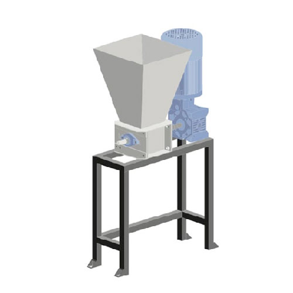

Build a Shredder Machine
Build a Shredder Machine
What is this machine?
The shredder is the backbone of Precious Plastic, it allows you to shred plastic into small flakes - you can easily wash and store shredded plastic and transport it to other Precious Plastic workspaces to make into beautiful, valuable products. Of course you can also use the plastic yourself or sell clean, separated plastic within the industry (which buys it at 8-10 times higher than unshredded plastic!)
Pro Tip: If you shred plastic by colours you can have more control over the look and feel of your creations- adding value to the material. `
📓 Technical information
| 📓 Type | Single Shaft Shredder |
|---|---|
| 💠Version | 2.0 |
| 💰 Price new material in NL | +/- €500 + motor |
| 💰 Price scrap material in NL | +/- €400 |
| ⚖️ Weight | 90 kg |
| 📦 Dimension | 280 x 600 x 1142 mm |
| ⚙️ Blade width | 5 mm, 6 mm |
| 🔌 Voltage | 380V |
| ⚡️ AMP | 5.8A |
| - Nominal Power | 1.5 kW minimum |
| - Nominal Torque | 300 Nm minimum |
| - Output Speed | ±70 r/min |

🌠3D Model
🛠Required machinery & skills
| Build Shredder | Machines needed | Skills needed |
|---|---|---|
|  | - Lathe - Drill press - Welding machine (not specific) - Belt Sander | - Welding (intermediate) - Machining (intermediate) - Assembling (intermediate) - Electronics (intermediate) |
⚡️ Electronic box
Explanation of the electric components inside this machine. More information and schematics can be found in the download-kit.
- Motor: The muscles of the machine - look for something with approx. 2.2kW that is geared down to 70rpm.
- LED indicator: LED that will shine with power (often found with Power switch).
- Power cable: Common household power cable.
Pro-tip: Here is a good forum topic about electronics
🛠Tips & tricks while making
- Take your time ensuring the box is square before any welding
- Use locknuts and ensure bearing bolts are tight
♻️ Input & Output
Type: HDPE, LDPE, PP, PS
Max thickness: 4mm
Size of hopper input: 400 x 200 mm
Output: ±10 kg/h
Definition of our flakes sizes
The shredded plastic can be used in three different Precious Plastic machines: extruder, injector, and sheetpress. Thus, we have defined three different sizes of shredded plastic that work with each machine
| Name: | Large | Medium | Small |
|---|---|---|---|
| Visual: | |||
| Size: | 0-30 MM | 0-10 MM | 0-7 MM |
| Works with: | Sheetpress | Sheetpress Injection Compression | Sheetpress Injection Compression Extrusion |
⚙️ Run & maintain
Ready to shred? yeah! First choose the plastic type - this usually depends on the quantities of plastic piling up in your sorting bags. Make sure you have enough of the same type of plastic, as the shredder has a process between cycles of different plastics (cleaning, for example).
Got your plastic type? Great. Now it’s time to break up the bigger plastic objects into smaller chunks that can go in the hopper. This can be done with a hammer, scissors or a saw depending on the plastic. At this point you should also roughly clean the plastic from major dirt (don’t waste too much time on this though as the plastic will be washed shortly after).
Let’s go - feed the plastic into the hopper. While shredding, you should regularly check the blades and push the plastic down towards the blades with the provided tool to make sure the blades are grabbing the plastic. When you finish working with the shredder, make sure to store and label the shredded plastic or the next person using the shredder won’t know what plastic type is in the bucket.
Note:âš ️ Always use extra care when working with the shredder
Quick steps on operating the shredder
- Gather the sorted plastic you want to shred
- Separate in colours
- Check if the mesh is installed with the right hole size
- Turn on the machine
- Put in the plastic and wait
- Store the shredded plastic
- Clean the machine
Changing plastic type
- Stop the machine, take out the plug
- Remove the mesh underneath with 4 screws
- Remove the little shredded flakes in the machine with a brush. Optionally blow it out with pressured air
- Put the mesh back in and shred another type of plastic
Tip: Clean the shredder blades and mesh every time you change plastic to avoid contamination of different plastic types.
🔓 Troubleshooting
- Sometimes the blades don’t grab the plastic. Try pushing the plastic towards the blades with the tool provided. Never attempt to do that with your hands.
- If plastic resistance exceeds the maximum torque of the motor, the machine will stop. Basically, there is too much plastic to be cut and the motor can’t make it. Switch on the machine and remove some of the clogged plastic.
🌦 Pros & cons
| Pros | Cons |
|---|---|
| Small and lightweight | Processing load is small |
| Option to granulate small flakes | Granulating is slow |
| Relatively cheap | High in maintenance |
| Portable |
🌠Built by the community


🙌 Useful Links
- âï¸Upgrade: Shredder 2.1
- Upgrade: Shredder efficiency
- Hack: Shredder & Extruder
- Hack: Human Powered Shredder
If you need help, have questions or looking for someone to talk to in your lonely cold workspace. Head to the #build channel on Discord. Here we talk nerdy about machines.